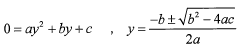
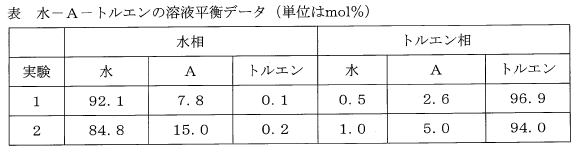

令和6年度 問32 化学プロセス
水100 molに成分Aを20 mol溶解した水溶液がある。これに、純粋なトルエン100 molを加え、容器の中で撹拌し、静置したところ、2液相に分離した。上層に含まれる成分Aの量として、最も近い値はどれか。水とトルエンの相互溶解度は無視できる。溶液平衡の実験データを下表に示す。根の公式は次の通りである。


①
16 mol
②
5.2 mol
③
5.0 mol
④
4.6 mol
⑤
4.0 mol
正答
④ 4.6 mol
正答は4番です。
水の密度は約1.0 g/cm³、トルエンの密度は約0.87 g/cm³であるため、上層がトルエン相、下層が水相となります。
1. 分配係数（分配比）の確認
与えられた平衡データから、トルエン相のモル分率 $y_{tol}$ と水相のモル分率 $x_{water}$ の比（分配係数 $K$）を求めます。
・実験1： $K = 2.6 / 7.8 = 1/3$
・実験2： $K = 5.0 / 15.0 = 1/3$
いずれも $K = 1/3$ となり、希薄溶液近似が成り立つことがわかります。
2. 物質収支による立式
上層（トルエン相）に移行した成分Aの物質量を $n_A$ [mol] とします。
・トルエン相のモル分率：$y_{tol} = \frac{n_A}{100 + n_A}$
・水相の成分Aの物質量：$20 - n_A$ [mol]
・水相のモル分率：$x_{water} = \frac{20 - n_A}{100 + (20 - n_A)} = \frac{20 - n_A}{120 - n_A}$
平衡関係 $y_{tol} = \frac{1}{3} x_{water}$ より：
$$\frac{n_A}{100 + n_A} = \frac{1}{3} \times \frac{20 - n_A}{120 - n_A}$$
$3n_A (120 - n_A) = (20 - n_A) (100 + n_A)$
$360n_A - 3n_A^2 = 2000 + 20n_A - 100n_A - n_A^2$
$2n_A^2 - 440n_A + 2000 = 0$
$n_A^2 - 220n_A + 1000 = 0$
3. 解の算出
根の公式より：
$n_A = \frac{220 \pm \sqrt{220^2 - 4 \times 1 \times 1000}}{2} = 110 \pm \frac{\sqrt{48400 - 4000}}{2} = 110 \pm \frac{\sqrt{44400}}{2} = 110 \pm 10\sqrt{111}$
$\sqrt{111} \approx 10.54$ とすると、
$n_A \approx 110 \pm 105.4$
$n_A \approx 4.6$ mol または $215.4$ mol
成分Aの全量は20 molであるため、物理的に妥当な解は4.6 molです。